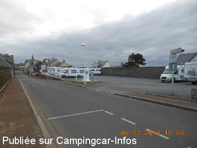
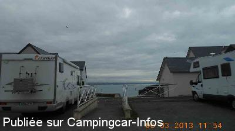
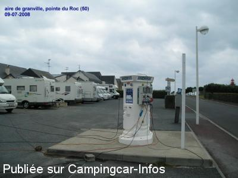

ASN = Aire de services avec stationnement nuit possible de :
GRANVILLE
(N° 767)
Accès/adresse :
Rue du Roc
50400 GRANVILLE
50400 GRANVILLE
Latitude : (Nord) 48.8353° Décimaux ou 48° 50′ 7′′
Longitude : (Ouest) -1.6095° Décimaux ou -1° 36′ 34′′
Tarif : 2015
Stationnement : 9 €
Services : 3,50 €
Électricité 50 m : 2,50 €
Paiement au monnayeur, pas de monnaie rendue
Type de borne : AIRESERVICES
Services :


Épicerie
Boucherie
Autres informations :
Tel : +33(0)233 913 003
http://www.granville.fr
Panorama imprenable

Le 15/03/2013 par michele.be

Le 15/03/2013 par michele.be

Le 14/07/2008 par pomme.luma
de
Jean Marc
le 29/04/2016 :
passage le 12/04/16, aire très agréable, située à coté de la ville haute et à deux pas de la pointe et du phare, vue magnifique.
passage le 12/04/16, aire très agréable, située à coté de la ville haute et à deux pas de la pointe et du phare, vue magnifique.
de
titilolo
le 25/08/2015 :
Il faut traverser toute la ville pour y acceder.Seulement 2 places vue mer.Bien situé pour visiter.
Il faut traverser toute la ville pour y acceder.Seulement 2 places vue mer.Bien situé pour visiter.
de
Bernadette
le 01/05/2013 :
Avons passé une nuit sur cette aire fin avril - calme proche du centre ville mais un peu difficile pour traverser la ville - mal indiquée heureusement que le GPS était là.
Avons passé une nuit sur cette aire fin avril - calme proche du centre ville mais un peu difficile pour traverser la ville - mal indiquée heureusement que le GPS était là.
de
michele.be
le 15/03/2013 :
§ Étape le 5/03/2013
Accès par la ville passage difficile pour les grands CC
La borne à carte bancaire est uniquement pour les services et monnayeur pour le stationnement 6 €
Je ne sais pas si c'est gratuit hors saison ? Personne n'a payé.
Aire dans le site historique très agréable, proche du centre ville.
Merci aux réalisateurs et la ville de bien nous recevoir.
§ Étape le 5/03/2013
Accès par la ville passage difficile pour les grands CC
La borne à carte bancaire est uniquement pour les services et monnayeur pour le stationnement 6 €
Je ne sais pas si c'est gratuit hors saison ? Personne n'a payé.
Aire dans le site historique très agréable, proche du centre ville.
Merci aux réalisateurs et la ville de bien nous recevoir.
de
leviking.d
le 05/05/2012 :
§
bonjour , se n'est pas coutume de raler , mais la je dit stop ; 6.euros pour juste poser les pneus , je dit stop , et si on veut de l'eau 2.80 en plus le tout pour 8.80 cela devient cher , on se raproche du prix du camping, le commentaire precedent dit vue sur la mer ( 2 places) pour les autres le stationnement c'est sois vue sur un mur ou vue sur un chantier, j'ai dormi le 3 04 12 , et la je dit adieu granville , heureusement que la manche possede d'autres endroits tranquille et bien mieux , et en plus sans etre les uns sur les autres
§
bonjour , se n'est pas coutume de raler , mais la je dit stop ; 6.euros pour juste poser les pneus , je dit stop , et si on veut de l'eau 2.80 en plus le tout pour 8.80 cela devient cher , on se raproche du prix du camping, le commentaire precedent dit vue sur la mer ( 2 places) pour les autres le stationnement c'est sois vue sur un mur ou vue sur un chantier, j'ai dormi le 3 04 12 , et la je dit adieu granville , heureusement que la manche possede d'autres endroits tranquille et bien mieux , et en plus sans etre les uns sur les autres
de
eastwood
le 21/11/2011 :
De passage pour une nuit le 19 novembre 2011 : aire superbement située avec vue sur la mer à quelques pas (avons trouvé assez facilement avec le GPS en tapant "rue Saint Roch"). Point positif : WC publics (corrects) sur la place de l'Aquarium en contrebas (quelques marches à descendre à partir de l'aire) + encore quelques marches à descendre et on se retrouve sur le port (avec de bons restaurants de fruits de mer à volonté). L'aire est dans la haute ville (remparts + petites rues) qui sont donc accessibles à pied, puis de là, on se retrouve en centre ville.
6 euros pour la nuit (ticket à prendre à compter de 19 h 00) sinon stationnement gratuit la journée (je conseille de s'y installer si l'on veut uniquement visiter Granville, les parkings en ville pour CC étant inexistants).
La nuit fut calme : la rue étant en sens unique et peu de circulation. Il y a un collège un peu plus loin, mais en week end, pas de bus scolaire !
Deux points négatifs :
* obligés de mettre les cales à l'avant (en pente) mais sinon après c'est OK.
* la borne électrique ne fonctionnait pas (les deux cartes bancaires ont été rejetées !!!) et pas moyen de mettre de pièces (uniquement paiement en CB).
De passage pour une nuit le 19 novembre 2011 : aire superbement située avec vue sur la mer à quelques pas (avons trouvé assez facilement avec le GPS en tapant "rue Saint Roch"). Point positif : WC publics (corrects) sur la place de l'Aquarium en contrebas (quelques marches à descendre à partir de l'aire) + encore quelques marches à descendre et on se retrouve sur le port (avec de bons restaurants de fruits de mer à volonté). L'aire est dans la haute ville (remparts + petites rues) qui sont donc accessibles à pied, puis de là, on se retrouve en centre ville.
6 euros pour la nuit (ticket à prendre à compter de 19 h 00) sinon stationnement gratuit la journée (je conseille de s'y installer si l'on veut uniquement visiter Granville, les parkings en ville pour CC étant inexistants).
La nuit fut calme : la rue étant en sens unique et peu de circulation. Il y a un collège un peu plus loin, mais en week end, pas de bus scolaire !
Deux points négatifs :
* obligés de mettre les cales à l'avant (en pente) mais sinon après c'est OK.
* la borne électrique ne fonctionnait pas (les deux cartes bancaires ont été rejetées !!!) et pas moyen de mettre de pièces (uniquement paiement en CB).
de
CLAUDE C.
le 20/09/2011 :
aire magnifiquement située sur le front de mer !...mais très difficile à situer lorsqu'on arrive à GRANVILLE,car très mal indiquée...il faut arriver sur place pour trouver enfin un panneau !...
aire magnifiquement située sur le front de mer !...mais très difficile à situer lorsqu'on arrive à GRANVILLE,car très mal indiquée...il faut arriver sur place pour trouver enfin un panneau !...
de
Gerard INQUEL
le 05/08/2010 :
De passage le 31/07.Belle aire pour stationner pour la visite de la ville.Dans la rue d'autres places de parkings sont disponibles.Proche ville haute très pittoresque.Un peu loin des restos de la vile basse mais permet une marche apéritive et une digestive ensuite.La vue depuis pointe du roc à 50m est superbe.
De passage le 31/07.Belle aire pour stationner pour la visite de la ville.Dans la rue d'autres places de parkings sont disponibles.Proche ville haute très pittoresque.Un peu loin des restos de la vile basse mais permet une marche apéritive et une digestive ensuite.La vue depuis pointe du roc à 50m est superbe.
de
jackydu14
le 29/11/2008 :
De passage ce week-end, changement de la borne. Pour le remplissage d'eau et l'électricité paiement par CB 2€ pour 55 minutes d'électricité ou 10 minutes d'eau, mais impossible de selectionner l'électricité. De ce fait, beaucoup moins de monde sur cette aire.
De passage ce week-end, changement de la borne. Pour le remplissage d'eau et l'électricité paiement par CB 2€ pour 55 minutes d'électricité ou 10 minutes d'eau, mais impossible de selectionner l'électricité. De ce fait, beaucoup moins de monde sur cette aire.
de
STEPHELIJUL
le 11/11/2008 :
Nous sommes venus sur l'aire de Granville ce week-end. Rien à redire, aire très bien, tranquille, prix raisonnable, la ville est pas trop loin.
Je vous conseille la visite de l'Aquarium Harmonie. L'accueil y est formidable, la visite vaut vraiment le détour. Des fresques magnifiques faites en coquillages, super ... Je vous le conseille.
Nous sommes venus sur l'aire de Granville ce week-end. Rien à redire, aire très bien, tranquille, prix raisonnable, la ville est pas trop loin.
Je vous conseille la visite de l'Aquarium Harmonie. L'accueil y est formidable, la visite vaut vraiment le détour. Des fresques magnifiques faites en coquillages, super ... Je vous le conseille.
de
Mike & Jackie B
le 06/09/2005 :
Found this place by accident Aug 2005-Brillian place and well worth a stop-over. Aire is in old town with sea views all the way round. Loads to see and do, shops, restaurants, marina, beach etc etc. Aire is free day and 4 euros overnight but this includes services and electricity. Fairly level hardstanding-got busy evening time. Evening craft market on quayside (Marina) To find aire, head for La Roc or Haute Ville-Keep port on your left and follow road up to lighthouse
Found this place by accident Aug 2005-Brillian place and well worth a stop-over. Aire is in old town with sea views all the way round. Loads to see and do, shops, restaurants, marina, beach etc etc. Aire is free day and 4 euros overnight but this includes services and electricity. Fairly level hardstanding-got busy evening time. Evening craft market on quayside (Marina) To find aire, head for La Roc or Haute Ville-Keep port on your left and follow road up to lighthouse